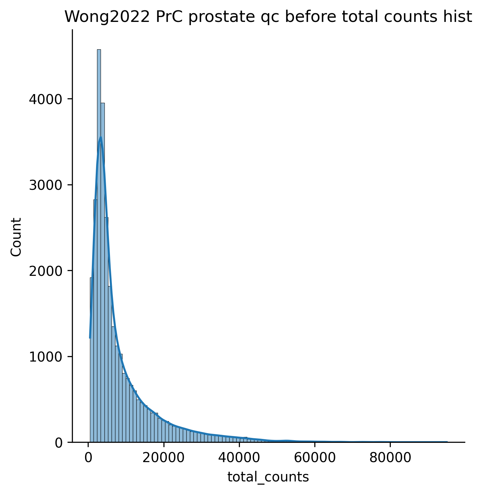
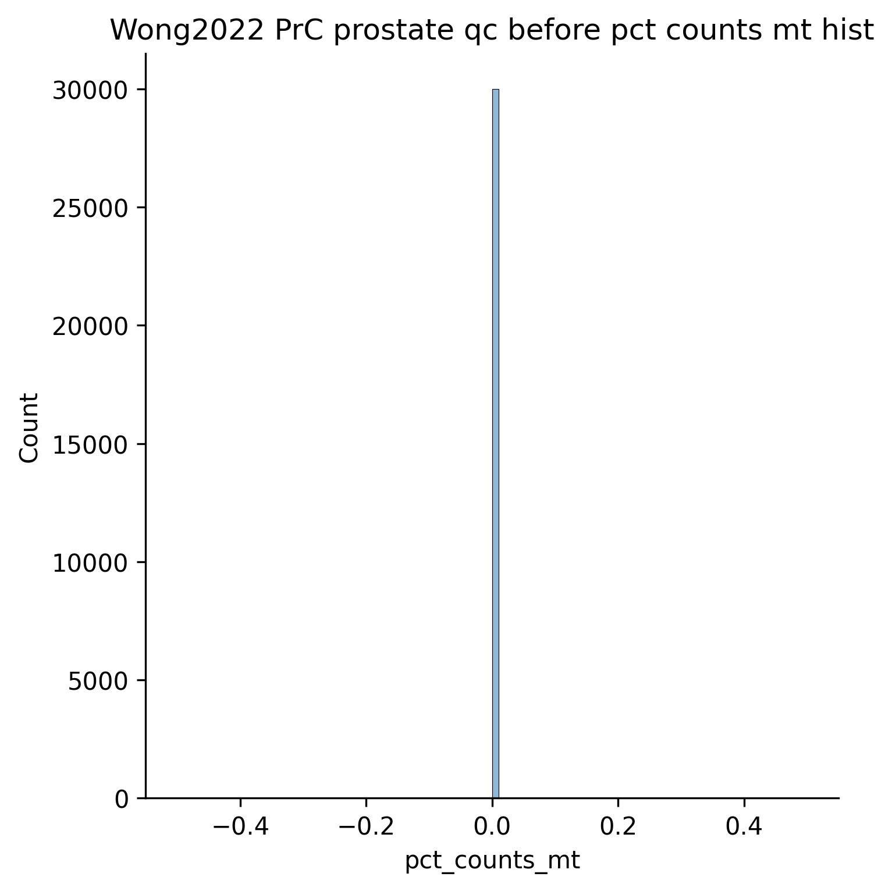
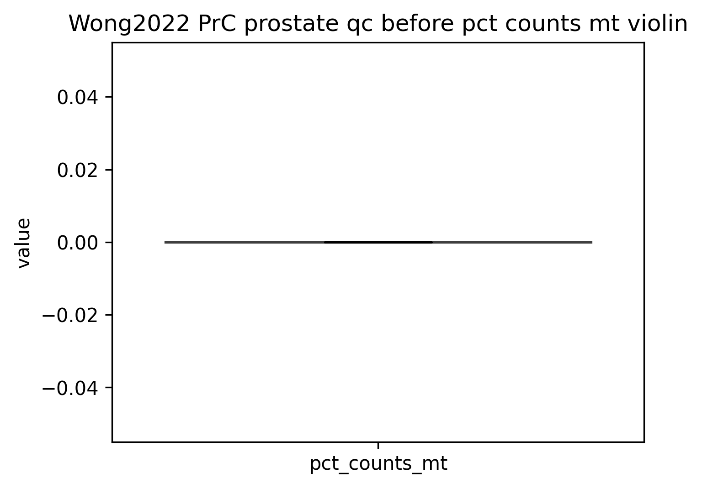
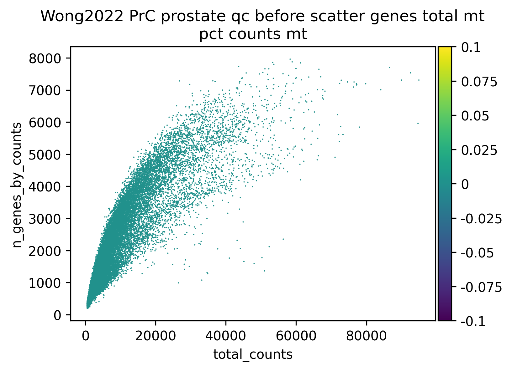
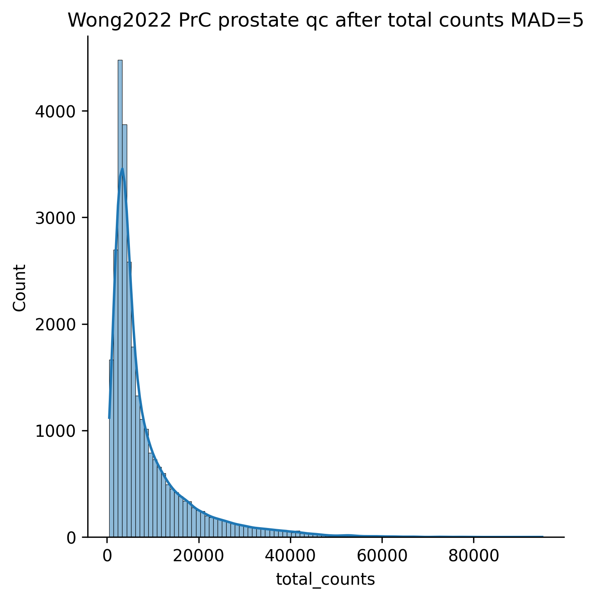
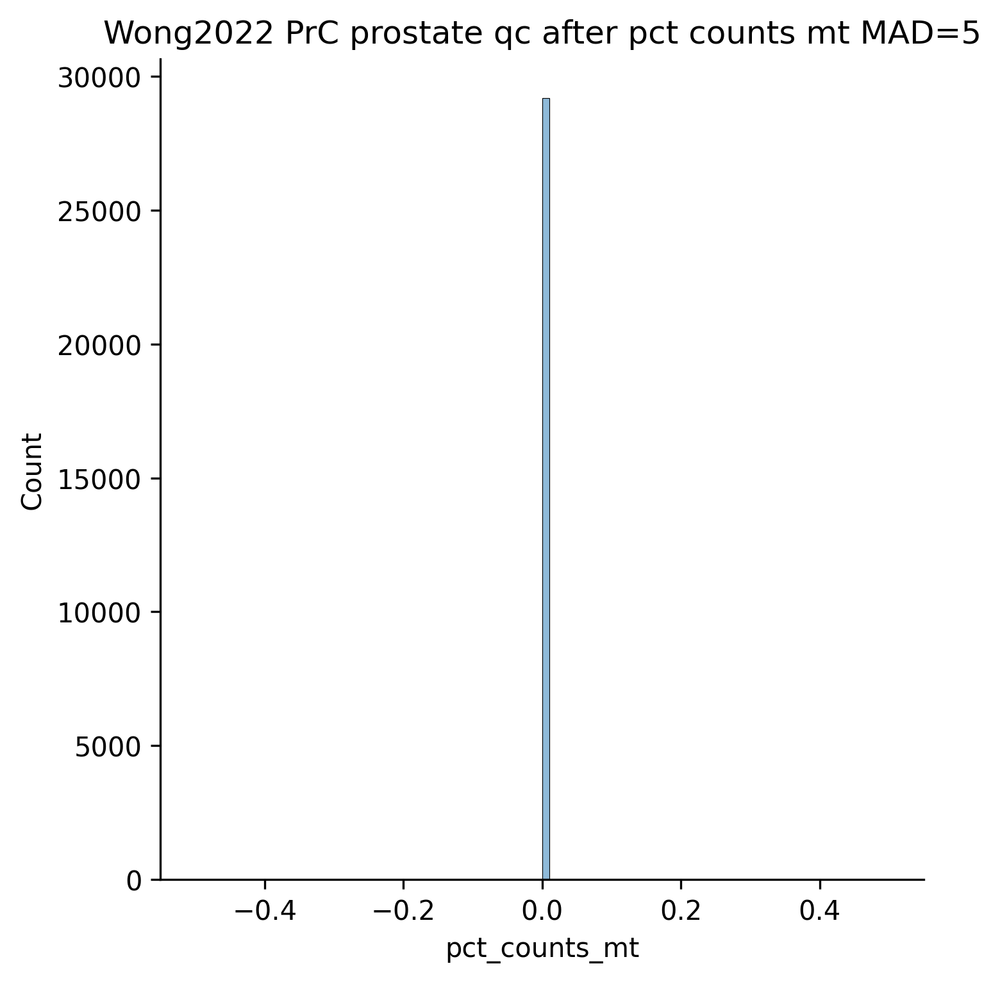
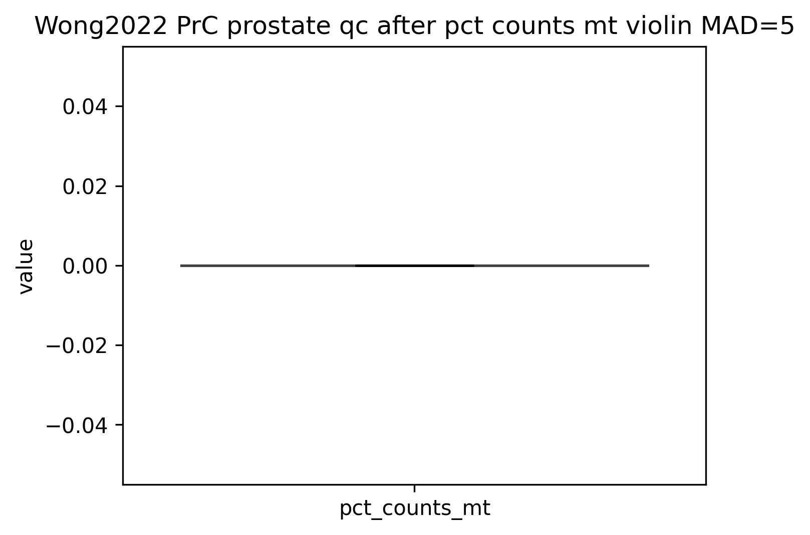
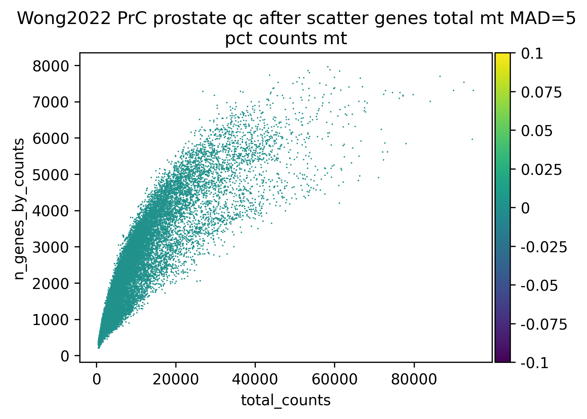

Table of Contents
- 1. Integrating martin, 10x, carT, PBMC landscape (swappable scVI / Scanorama)
- 2. Loading datasets
- 3. Additional atlas datasets
- 3.1. Quality Control
- 4. Combined processing
- 4.1. Cohort overview
- 4.2. Dataset merge
- 4.3. Normalisation
- 4.4. T cell selection (CD3+; all subtypes)
- 5. Lineage split (CD8 / CD4)
- 6. CD8 lineage: full processing
- 6.1. Normalisation
- 6.2. Feature selection
- 6.3. PCA UMAP (pre-scVI reference)
- 6.4. Scanorama integration
- 6.5. UMAP on integration embedding (X_integrated)
- 6.6. CD8: integration comparison (PCA vs integrated UMAP)
- 6.7. CD8: state labeling
- 6.8. CD8: sanity check lineage scores
- 6.9. CD8: overview UMAP
- 6.10. CD8: standalone disease UMAP
- 6.11. CD8: individual state-marker gene UMAPs
- 7. CD8: cell type and metadata UMAPs
- 7.1. Marker scores: raw (log1p) and integrated (integrated_normalized_log1p)
- 7.2. Annotation UMAP: integrated embedding vs PCA (raw embedding)
- 7.3. Score UMAP: integrated (integrated_normalized_log1p) vs raw (log1p)
- 8. CD8: inhibitory receptor analysis
- 8.1. IR expression per gene
- 8.2. IR dotplots
- 8.3. IR boxplots and stripplots
- 8.4. FindAllMarkers
- 8.5. FindAllMarkers
- 8.6. IR UMAPs per gene
- 9. CD4 lineage: full processing
- 9.1. Normalisation
- 9.2. Feature selection
- 9.3. PCA UMAP (pre-scVI reference)
- 9.4. Scanorama integration
- 9.5. UMAP on integration embedding (X_integrated)
- 9.6. CD4: integration comparison (PCA vs integrated UMAP)
- 9.7. CD4: state labeling
- 9.8. CD4: sanity check lineage scores
- 9.9. CD4: overview UMAP
- 9.10. CD4: standalone disease UMAP
- 9.11. CD4: individual state-marker gene UMAPs
- 10. CD4: cell type and metadata UMAPs
- 10.1. Marker scores: raw (log1p) and integrated (integrated_normalized_log1p)
- 10.2. Annotation UMAP: integrated embedding vs PCA (raw embedding)
- 10.3. Score UMAP: integrated (integrated_normalized_log1p) vs raw (log1p)
- 11. CD4: inhibitory receptor analysis
- 11.1. IR expression per gene
- 11.2. IR dotplots
- 11.3. IR boxplots and stripplots
- 11.4. FindAllMarkers
- 11.5. FindAllMarkers
- 11.6. IR UMAPs per gene
1. Integrating martin, 10x, carT, PBMC landscape (swappable scVI / Scanorama)
2. Loading datasets
load_dataset
function: load_dataset parameters: filename: INFLAMMATION_ATLAS_main_subsampled.h5ad max_cells: null study: null tissue_type: PBMC cache_file: data/load_dataset_a002a718bc6d.h5ad
load file 1: INFLAMMATION_ATLAS_main_subsampled.h5ad
file_version: 2026-07-07 13:11:58.040878750
Loaded 'INFLAMMATION_ATLAS_main_subsampled.h5ad' (backed): 100000 × 22838
2.1. Loaded: INFLAMMATION_ATLAS_main_subsampled.h5ad
Shape: 100000 cells × 22838 genes
layers: ['counts'] | obsm: []
obs columns
| index | column | dtype | n_unique | top values |
|---|---|---|---|---|
| 0 | libraryID | category | 484 | SCGT04_L000 (1477), SCGT02_L003 (1113), SCGT02_L000 (1053) |
| 1 | sampleID | category | 817 | SCGT04_CNAG118_T0 (776), SCGT04_CNAG117_T0 (701), Terekhova2023_E23_T2 (425) |
| 2 | Level1 | category | 17 | Mono (21204), T_CD4_Naive (16224), T_CD4_NonNaive (14739) |
| 3 | Level2 | category | 66 | T_CD4_Naive (16224), Mono_classical (9863), Doublets (5057) |
| 4 | tissue_type | object | 1 | PBMC (100000) |
var columns
Note: Showing at most 10 rows and 10 columns from data with 12 rows and 4 columns.
| index | column | dtype | n_unique | sample values |
|---|---|---|---|---|
| 0 | hgnc_id | category | 18772 | HGNC:57014 (1), HGNC:5 (1), HGNC:7 (1) |
| 1 | symbol | category | 22826 | LINC03021 (2), ZNF724 (2), GOLGA8M (2) |
| 2 | locus_group | category | 7 | protein_coding (15532), lncRNA (3879), non-coding RNA (2941) |
| 3 | HUGO_status | category | 2 | official (18772), non-official (4066) |
| 4 | mt | bool | min=0 mean=0.000569 max=1 | |
| 5 | ribo | bool | min=0 mean=0.00482 max=1 | |
| 6 | hb | bool | min=0 mean=0.000482 max=1 | |
| 7 | plt | bool | min=0 mean=0.000219 max=1 | |
| 8 | n_cells_by_counts | int64 | min=241 mean=3.23e+05 max=5.98e+06 | |
| 9 | total_counts | int64 | min=260 mean=9.8e+05 max=8.3e+08 |
remap_columns
function: remap_columns parameters: column_map: {"Chemistry": "chemistry", "Disease": "disease", "Donor": "donor", "PatientID": "donor", "Sample": "sample_id", "SampleID": "sample_id", "cohort": "study", "condition": "disease", "dataset": "study", "detailed_context": "disease_detail", "disease_status": "disease", "disease_subtype": "disease_detail", "donor_id": "donor", "library_type": "chemistry", "protocol": "chemistry", "subtype": "disease_detail"} defaults: {"chemistry": "10x_3v3", "study": "inflammation_atlas"} cache_file: data/remap_columns_fac5391ab7c5.h5ad
remap_columns: no renames applied (targets already present or sources absent)
Default applied: study = 'inflammation_atlas'
Default applied: chemistry = '10x_3v3'
filter_dataset
function: filter_dataset parameters: column: Level1 exclude_pattern: "NK|ILC" keep_pattern: "^T_" keep_values: null cache_file: data/filter_dataset_95d2f7e0bfec.h5ad
filter_dataset on 'Level1' — criteria: keep_pattern=/^T_/; exclude_pattern=/NK|ILC/
filter_dataset on 'Level1': {'Mono': 21204, 'T_CD4_Naive': 16224, 'T_CD4_NonNaive': 14739, 'T_CD8_NonNaive': 10696, 'ILC': 7721, 'B': 7077, 'Doublets': 5057, 'LowQuality_cells': 4880, 'T_CD8_Naive': 4242, 'Platelets': 3043, 'UTC': 2382, 'DC': 953, 'Cycling_cells': 828, 'pDC': 410, 'Plasma': 337, 'Progenitors': 158, 'RBC': 49}
Retained 45901 / 100000 cells ({'T_CD4_Naive': 16224, 'T_CD4_NonNaive': 14739, 'T_CD8_NonNaive': 10696, 'T_CD8_Naive': 4242})
3. Additional atlas datasets
load_dataset
function: load_dataset parameters: filename: GSE185344.raw_counts_stand.h5ad max_cells: 30000 study: Wong2022 tissue_type: null cache_file: data/load_dataset_2502a4e2fd43.h5ad
load file 2: GSE185344.raw_counts_stand.h5ad
file_version: 2026-09-09 09:26:05.966599429
Loaded 'GSE185344.raw_counts_stand.h5ad' (backed): 57697 × 38224
Subsampled to 30000 cells (backed → memory)
Gene names: index → ENSG IDs (16855 without ensembl_id kept via symbol), dropped 3 duplicates → 38221 genes
Pre-computed QC metrics from gene_name column
3.1. Loaded: GSE185344.raw_counts_stand.h5ad
Shape: 30000 cells × 38221 genes
layers: ['counts'] | obsm: []
obs columns
Note: Showing at most 10 rows and 10 columns from data with 28 rows and 4 columns.
| index | column | dtype | n_unique | top values |
|---|---|---|---|---|
| 0 | study_id | category | 1 | GSE185344 (30000) |
| 1 | sample_id | category | 14 | HYW_5742_Tumor (5014), HYW_4701_Tumor (3321), HYW_5386_Tumor (3310) |
| 2 | donor | category | 7 | ICC6 (7046), ICC5 (4959), ICC3 (4383) |
| 3 | tissue_group | category | 2 | TIL (21558), tissue (8442) |
| 4 | disease_group | category | 1 | CANCER (30000) |
| 5 | tissue | category | 1 | prostate (30000) |
| 6 | disease | category | 1 | PC (30000) |
| 7 | tissue_detail | category | 2 | tumour itself (21558), non tumour tissue from patient (8442) |
| 8 | disease_detail | category | 1 | ICC/IDC (30000) |
| 9 | chemistry | category | 2 | 10x_5p_v1 (19311), 10x_5p_v2 (10689) |
var columns
Note: Showing at most 10 rows and 10 columns from data with 14 rows and 4 columns.
| index | column | dtype | n_unique | sample values |
|---|---|---|---|---|
| 0 | gene_name | object | 38221 | FAM231C (1), MIR1302-2HG (1), FAM138A (1) |
| 1 | ensembl_id | category | 21366 | ENSG00000310560 (1), ENSG00000000003 (1), ENSG00000000005 (1) |
| 2 | ensembl_source | category | 5 | direct_hgnc_exact (21357), unmapped (14937), ambiguous_direct_hgnc_exact (1918) |
| 3 | ensembl_gene_tag | category | 2 | single_gene (21365), multiple_genes (1) |
| 4 | mt | bool | min=0 mean=0.00034 max=1 | |
| 5 | ribo | bool | min=0 mean=0.00275 max=1 | |
| 6 | hb | bool | min=0 mean=0.000314 max=1 | |
| 7 | n_cells_by_counts | int64 | min=0 mean=1.65e+03 max=2.98e+04 | |
| 8 | mean_counts | float64 | min=0 mean=0.224 max=149 | |
| 9 | log1p_mean_counts | float64 | min=0 mean=0.0973 max=5.01 |
remap_columns
function: remap_columns parameters: column_map: {"Age": "age", "Chemistry": "chemistry", "Disease": "disease", "Donor": "donor", "Patient": "donor", "PatientID": "donor", "Sample": "sample_id", "SampleID": "sample_id", "Sex": "sex", "Tissue": "tissue_type", "assay": "chemistry", "cohort": "study", "condition": "disease", "condition_detail": "disease_detail", "dataset": "study", "detailed_context": "disease_detail", "diagnosis": "disease", "diagnosis_detail": "disease_detail", "disease_status": "disease", "disease_subtype": "disease_detail", "donor_id": "donor", "gender": "sex", "library_type": "chemistry", "organ": "tissue_type", "patient": "donor", "patient_id": "donor", "protocol": "chemistry", "sample": "sample_id", "sampleID": "sample_id", "sample_type": "tissue_type", "source_tissue": "tissue_type", "subtype": "disease_detail", "tissue": "tissue_type"} defaults: {"chemistry": "10x_5v1", "disease": "PrC", "disease_detail": "Prostate cancer (ICC/IDC)"} cache_file: data/remap_columns_60d9c1a6f073.h5ad
Remapped columns: tissue → tissue_type
qc_full
function: qc_full parameters: excluded_gene_patterns: null expected_doublet_rate: 0.05 frac_treshold: 0.05 low_count_treshold: 1000 mad_outlier_var: 5 min_cells_per_gene: 20 mitochondria_cutoff_percentage: 8 name: Wong2022_PrC_prostate cache_file: data/qc_full_1ad236b786c6.h5ad
3.1. Quality Control
3.1.1. Ambient RNA QC
Checking if a cleanup is necessary, flagging cells with less than 1000 counts as potential ambient RNA contamination
No significant RNA contamination detected, skipping cleanup
3.1.2. Count QC
| index | count | mean | std | min | 25% | 50% | 75% | max |
|---|---|---|---|---|---|---|---|---|
| total_counts | 30000 | 8555.56 | 9320.59 | 501 | 2976.75 | 4856 | 10537.50 | 94953 |
| n_genes_by_counts | 30000 | 2102.03 | 1341.47 | 202 | 1146 | 1617 | 2799 | 7960 |
| pct_counts_mt | 30000 | 0 | 0 | 0 | 0 | 0 | 0 | 0 |
| pct_counts_ribo | 30000 | 1.67 | 0.75 | 0 | 1.18 | 1.61 | 2.09 | 6.62 |
| pct_counts_hb | 30000 | 0 | 0 | 0 | 0 | 0 | 0 | 0 |
| pct_counts_in_top_20_genes | 30000 | 22.27 | 6.58 | 9.38 | 17.95 | 21.01 | 24.97 | 87 |
   
{kind=link}
{kind=link}
{kind=link}
{kind=link}
Number of count outliers with MAD > 5: 816
Number of mitochondrial outliers with MAD > 5 or pct_counts_mt > 8: 0
Filtered out outliers: 816 (2.72%)
Filtering out genes expressed in less than 20 cells
Removed 21322 genes (44.21%)
After count QC:
   
{kind=link}
{kind=link}
{kind=link}
{kind=link}
3.1.3. Doublet QC
Running scrublet with expected doublet rate 0.05
{kind=link}
There are 2 predicted doublets, applying filter
After doublet step: (29180, 21322) (removed 0.01% cells)
3.1.4. Gene exclusion
Excluding genes matching the following patterns:
Note: Showing at most 10 rows and 10 columns from data with 11 rows and 2 columns.
| mt_genes | ['MT-'] |
| ribo_genes | ['RPS', 'RPL'] |
| hb_genes | ['^HBA|^HBB'] |
| stress_genes | ['G0S2', '^JUN', '^FOS', 'CDKN1A'] |
| IFN_genes | ['^IRF', '^IFN'] |
| ccl_genes | ['CCL'] |
| MHC_genes | ['^HLA-[A-Z]'] |
| hist_genes | ['HIST'] |
| comp_genes | ['^C1Q'] |
| ig_genes | ['^IGH', '^IGK', '^IGL'] |
Removing 436 genes (2.04%)
Shape after exclusion panel filtering: (29180, 20886)
4. Combined processing
4.1. Cohort overview
{kind=link}
| index | dataset | n_cells | tissue | study | n_diseases |
|---|---|---|---|---|---|
| 0 | Inflammation_Atlas_PBMC | 45901 | PBMC | inflammation_atlas | 0 |
| 1 | Wong2022_PrC_prostate | 29180 | prostate | Wong2022 | 1 |
Total: 75,081 cells · 2 datasets · 1 disease values
4.2. Dataset merge
Inflammation_Atlas_PBMC: 22838 genes, 22838 ENSG-keyed (symbol_col=symbol); sample ['ENSG00000000003', 'ENSG00000000419', 'ENSG00000000457']
Wong2022_PrC_prostate: 20885 genes, 16839 ENSG-keyed (symbol_col=gene_name); sample ['AL627309.1', 'AL627309.5', 'AP006222.2']
Union gene universe across 2 datasets: 28460 genes
load file 3: inhibitory_receptor_list_new.csv
file_version: 2026-05-13 15:49:25.468477661
load file 4: state_markers.csv
file_version: 2026-04-21 10:55:48.543853355
Coverage filter: keeping 15266 / 28460 genes (measured in ≥2/2 datasets; 3 whitelist-rescued)
Lineage markers present in merged set: ['CD3D', 'CD3E', 'CD3G', 'CD8A', 'CD8B', 'CD8B2', 'CD4'] (of ['CD3D', 'CD3E', 'CD3G', 'CD8A', 'CD8B', 'CD8B2', 'CD4'])
Merged 2 datasets: 75081 cells × 15266 genes
tissue_type: {'PBMC': 45901, 'prostate': 29180}
study: {'inflammation_atlas': 45901, 'Wong2022': 29180}
source: {'Inflammation_Atlas_PBMC': 45901, 'Wong2022_PrC_prostate': 29180}
disease: {'PC': 29180}
normalise
function: normalise parameters: {} cache_file: data/normalise_82e766421f9f.h5ad
4.3. Normalisation
Normalised in reference to total counts
Transformed with log1p
{kind=link}
{kind=link}
4.4. T cell selection (CD3+; all subtypes)
score_and_select_t_cells
function: score_and_select_t_cells parameters: {} cache_file: data/score_and_select_t_cells_199493b94c0e.h5ad
Calculated marker score cd3_score from genes: CD3G, CD3D, CD3E
Calculated marker score cd8_score from genes: CD8A, CD8B, CD8B2
Calculated marker score cd4_score from genes: CD4
Calculated marker score NK cells_score from genes: NKG7, GNLY, KLRD1, NCAM1
Calculated marker score B cells_score from genes: CD79A, MS4A1, CD19
Calculated marker score Macrophages_score from genes: CD68, CSF1R, MRC1
Calculated marker score Fibroblasts_score from genes: COL1A1, COL1A2
{kind=link}
T cell selection (CD3+): 75081 → 36880 cells
5. Lineage split (CD8 / CD4)
select_cd8_cells
function: select_cd8_cells parameters: {} cache_file: data/select_cd8_cells_70591c7b76c8.h5ad
CD8 subset: 11571 / 36880 cells (31.4%)
tissue_type: {'PBMC': 8211, 'prostate': 3360}
select_cd4_cells
function: select_cd4_cells parameters: {} cache_file: data/select_cd4_cells_ce01af98242a.h5ad
CD4 subset: 16785 / 36880 cells (45.5%)
tissue_type: {'PBMC': 14696, 'prostate': 2089}
6. CD8 lineage: full processing
normalise
function: normalise parameters: {} cache_file: data/normalise_e8459ad6a09a.h5ad
6.1. Normalisation
Normalised in reference to total counts
Transformed with log1p
{kind=link}
{kind=link}
load file 5: inhibitory_receptor_list_new.csv
file_version: 2026-05-13 15:49:25.468477661
feature_selection_full
function: feature_selection_full parameters: batch_key: study display_top_n_genes: 20 marker_file: state_markers.csv n_top_genes: 5000 old_seurat: true whitelist_genes: ["gene", "PDCD1", "BTLA", "CD200R1", "CTLA4", "LAG3", "TIGIT", "HAVCR2", "CLEC12A", "CLEC12B", "CLEC1A", "CLEC1B", "CLEC4A", "CLEC8A", "CLEC9A", "FCRL2", "FCRL3", "FCRL4", "FCRL5", "FCRL6", "FCGR2A", "FCGR2B", "FCGR2C", "KIR2DL1", "KIR2DL2", "KIR2DL3", "KIR2DL4", "KIR2DL5A", "KIR3DL1", "KIR3DL2", "KIR3DL3", "KLRB1", "KLRC1", "KLRF2", "KLRG1", "LILRB1", "LILRB2", "LILRB3", "LILRB4", "LILRB5", "CD72", "CD99L2", "CEACAM1", "MPIG6B", "LAIR1", "NCR2", "PECAM1", "PILRA", "SIRPA", "VSIR", "VSTM1", "VSTM4", "CD22", "CD33", "SIGLEC10", "SIGLEC11", "SIGLEC12", "SIGLEC5", "SIGLEC6", "SIGLEC7", "SIGLEC8", "SIGLEC9", "SLAMF1", "CD244", "LY9", "CD84", "SLAMF6", "SLAMF7", "CD5", "CD3D", "CD3E", "CD3G", "CD8A", "CD8B", "CD8B2", "CD4", "NCAM1", "NKG7", "GNLY", "KLRD1", "CD19", "MS4A1", "CD79A", "CD68", "CSF1R", "MRC1", "COL1A1", "COL1A2", "FAP"] cache_file: data/feature_selection_full_21bcb1c06f3f.h5ad
6.2. Feature selection
load file 6: state_markers.csv
file_version: 2026-04-21 10:55:48.543853355
6.2.1. Highly Variable Gene selection
Batch-aware HVG selection (batch_key='study'): genes ranked by variability within batches, so batch-specific genes (differing panels/platforms) are not selected
HVGs selected: 5038 (including 104 whitelisted genes)
{kind=link}
{kind=link}
6.2.2. Top 20 expressed genes after selection:
{kind=link}
pca_umap
function: pca_umap parameters: name: cd8 cache_file: data/pca_umap_40eb994576d9.h5ad
6.3. PCA UMAP (pre-scVI reference)
{kind=link}
integrate_scanorama
function: integrate_scanorama parameters: name: cd8 cache_file: data/integrate_scanorama_64b8d8f8fd17.h5ad
6.4. Scanorama integration
study batches: {'inflammation_atlas': 8211, 'Wong2022': 3360}
Split into 2 study batches: {'inflammation_atlas': 8211, 'Wong2022': 3360}
Integration embedding obsm['X_integrated']: (11571, 30)
Stored layers['integrated_normalized_log1p']: Scanorama-corrected log-scale, range [-0.05061, 0.2713]
umap_integrated
function: umap_integrated parameters: name: cd8 cache_file: data/umap_integrated_52e1e767cc5a.h5ad
6.5. UMAP on integration embedding (X_integrated)
Leiden clusters: 12
6.6. CD8: integration comparison (PCA vs integrated UMAP)
{kind=link}
{kind=link}
6.7. CD8: state labeling
label_states
function: label_states parameters: marker_file: state_markers.csv cache_file: data/label_states_36cd14246a12.h5ad
load file 7: state_markers.csv
file_version: 2026-04-21 10:55:48.543853355
6.7.1. Labeling states based on markers:
| cytotoxic | effector | exhausted | naive/memory |
|---|---|---|---|
| IFNG1 | RORC | TOX | ID3 |
| PRF1 | TBX21 | ENTPD1 | CCR7 |
| GZMA | CX3CR1 | BATF | SELL |
| GZMB | RORA | LAG3 | CXCR3 |
| GNLY | ZEB2 | TIGIT | LEF1 |
| KLRG1 | TOX2 | TCF7 | |
| ID2 | PDCD1 | ZEB1 | |
| PRDM1 | TRIB1 | CD28 | |
| BHLHE40 | CTLA4 |
State marker genes in dataset: 30 present, 1 missing
Omitted state markers: IFNG1
6.7.2. Assigned state labels:
| state | n_cells | pct_cells |
|---|---|---|
| naive/memory | 5019 | 43.40 |
| effector | 2527 | 21.80 |
| cytotoxic | 2383 | 20.60 |
| exhausted | 1642 | 14.20 |
6.8. CD8: sanity check lineage scores
{kind=link}
6.9. CD8: overview UMAP
{kind=link}
6.10. CD8: standalone disease UMAP
{kind=link}
{kind=link}
6.11. CD8: individual state-marker gene UMAPs
load file 8: state_markers.csv
file_version: 2026-04-21 10:55:48.543853355
Warning: no genes matched for score marker_IFNG1 in layer 'log1p' — column set to NaN
Calculated marker score marker_PRF1 from genes: PRF1
Calculated marker score marker_GZMA from genes: GZMA
Calculated marker score marker_GZMB from genes: GZMB
Calculated marker score marker_GNLY from genes: GNLY
Calculated marker score marker_RORC from genes: RORC
Calculated marker score marker_TBX21 from genes: TBX21
Calculated marker score marker_CX3CR1 from genes: CX3CR1
Calculated marker score marker_RORA from genes: RORA
Calculated marker score marker_ZEB2 from genes: ZEB2
Calculated marker score marker_KLRG1 from genes: KLRG1
Calculated marker score marker_ID2 from genes: ID2
Calculated marker score marker_PRDM1 from genes: PRDM1
Calculated marker score marker_BHLHE40 from genes: BHLHE40
Calculated marker score marker_TOX from genes: TOX
Calculated marker score marker_ENTPD1 from genes: ENTPD1
Calculated marker score marker_BATF from genes: BATF
Calculated marker score marker_LAG3 from genes: LAG3
Calculated marker score marker_TIGIT from genes: TIGIT
Calculated marker score marker_TOX2 from genes: TOX2
Calculated marker score marker_PDCD1 from genes: PDCD1
Calculated marker score marker_TRIB1 from genes: TRIB1
Calculated marker score marker_CTLA4 from genes: CTLA4
Calculated marker score marker_ID3 from genes: ID3
Calculated marker score marker_CCR7 from genes: CCR7
Calculated marker score marker_SELL from genes: SELL
Calculated marker score marker_CXCR3 from genes: CXCR3
Calculated marker score marker_LEF1 from genes: LEF1
Calculated marker score marker_TCF7 from genes: TCF7
Calculated marker score marker_ZEB1 from genes: ZEB1
Calculated marker score marker_CD28 from genes: CD28

7. CD8: cell type and metadata UMAPs
load file 9: inhibitory_receptor_list_new.csv
file_version: 2026-05-13 15:49:25.468477661
7.1. Marker scores: raw (log1p) and integrated (integrated_normalized_log1p)
Calculated marker score cd3_score from genes: CD3G, CD3D, CD3E
Calculated marker score cd3_score_integrated from genes: CD3G, CD3D, CD3E
Calculated marker score cd8_score from genes: CD8A, CD8B, CD8B2
Calculated marker score cd8_score_integrated from genes: CD8A, CD8B, CD8B2
Calculated marker score cd4_score from genes: CD4
Calculated marker score cd4_score_integrated from genes: CD4
Calculated marker score NK cells_score from genes: NKG7, GNLY, KLRD1, NCAM1
Calculated marker score NK cells_score_integrated from genes: NKG7, GNLY, KLRD1, NCAM1
Calculated marker score B cells_score from genes: CD79A, MS4A1, CD19
Calculated marker score B cells_score_integrated from genes: CD79A, MS4A1, CD19
Calculated marker score Macrophages_score from genes: CD68, CSF1R, MRC1
Calculated marker score Macrophages_score_integrated from genes: CD68, CSF1R, MRC1
Calculated marker score Fibroblasts_score from genes: COL1A1, COL1A2
Calculated marker score Fibroblasts_score_integrated from genes: COL1A1, COL1A2
Calculated marker score inhibitory_receptor_score from genes: CD22, SLAMF7, CD84, FCGR2B, CEACAM1, PILRA, LAG3, CD99L2, LILRB1, SIGLEC8, CD33, SIGLEC6, SIGLEC5, LILRB5, VSIR, CD5, CLEC4A, KLRB1, SLAMF1, CD244, LY9, KIR2DL1, SIGLEC9, LILRB2, FCRL2, KLRC1, HAVCR2, CD72, KLRG1, SIGLEC10, FCGR2A, FCRL5, CLEC1A, FCRL3, SIGLEC11, SLAMF6, CTLA4, CD200R1, VSTM4, CLEC1B, LAIR1, KIR3DL1, SIGLEC7, CLEC12A, FCRL6, TIGIT, BTLA, LILRB4, PDCD1, KIR2DL4, VSTM1, CLEC9A, SIRPA, MPIG6B, LILRB3, KIR3DL2, KIR3DL3, KIR2DL3, SIGLEC12, CLEC12B, PECAM1
Calculated marker score inhibitory_receptor_score_integrated from genes: CD22, SLAMF7, CD84, FCGR2B, CEACAM1, PILRA, LAG3, CD99L2, LILRB1, SIGLEC8, CD33, SIGLEC6, SIGLEC5, LILRB5, VSIR, CD5, CLEC4A, KLRB1, SLAMF1, CD244, LY9, KIR2DL1, SIGLEC9, LILRB2, FCRL2, KLRC1, HAVCR2, CD72, KLRG1, SIGLEC10, FCGR2A, FCRL5, CLEC1A, FCRL3, SIGLEC11, SLAMF6, CTLA4, CD200R1, VSTM4, CLEC1B, LAIR1, KIR3DL1, SIGLEC7, CLEC12A, FCRL6, TIGIT, BTLA, LILRB4, PDCD1, KIR2DL4, VSTM1, CLEC9A, SIRPA, MPIG6B, LILRB3, KIR3DL2, KIR3DL3, KIR2DL3, SIGLEC12, CLEC12B, PECAM1
7.2. Annotation UMAP: integrated embedding vs PCA (raw embedding)
{kind=link}
{kind=link}
7.3. Score UMAP: integrated (integrated_normalized_log1p) vs raw (log1p)
{kind=link}
8. CD8: inhibitory receptor analysis
Inhibitory receptor genes expressed (mean log1p > 0.1): 16: SLAMF7, CD84, LAG3, VSIR, CD5, KLRB1, SLAMF1, LY9, KLRC1, KLRG1, SLAMF6, LAIR1, FCRL6, TIGIT, PDCD1, PECAM1
8.1. IR expression per gene
IR obs columns — integrated: ['IR_SLAMF7_integrated', 'IR_CD84_integrated', 'IR_LAG3_integrated', 'IR_VSIR_integrated', 'IR_CD5_integrated', 'IR_KLRB1_integrated', 'IR_SLAMF1_integrated', 'IR_LY9_integrated', 'IR_KLRC1_integrated', 'IR_KLRG1_integrated', 'IR_SLAMF6_integrated', 'IR_LAIR1_integrated', 'IR_FCRL6_integrated', 'IR_TIGIT_integrated', 'IR_PDCD1_integrated', 'IR_PECAM1_integrated']
IR obs columns — raw: ['IR_SLAMF7_raw', 'IR_CD84_raw', 'IR_LAG3_raw', 'IR_VSIR_raw', 'IR_CD5_raw', 'IR_KLRB1_raw', 'IR_SLAMF1_raw', 'IR_LY9_raw', 'IR_KLRC1_raw', 'IR_KLRG1_raw', 'IR_SLAMF6_raw', 'IR_LAIR1_raw', 'IR_FCRL6_raw', 'IR_TIGIT_raw', 'IR_PDCD1_raw', 'IR_PECAM1_raw']
load file 10: state_markers.csv
file_version: 2026-04-21 10:55:48.543853355
8.2. IR dotplots
Plotting 16 genes from adata.var[inhibitory_receptor_genes_expressed]
{kind=link}
Plotting 16 genes from adata.var[inhibitory_receptor_genes_expressed]
{kind=link}
Plotting 16 genes from adata.var[inhibitory_receptor_genes_expressed]
{kind=link}
Plotting 16 genes from adata.var[inhibitory_receptor_genes_expressed]
{kind=link}
Plotting 16 genes from adata.var[inhibitory_receptor_genes_expressed]
{kind=link}
Plotting 16 genes from adata.var[inhibitory_receptor_genes_expressed]
{kind=link}
8.3. IR boxplots and stripplots
Plotting 16 genes from adata.var[inhibitory_receptor_genes_expressed]
{kind=link}
Plotting 16 genes from adata.var[inhibitory_receptor_genes_expressed]
{kind=link}
Plotting 16 genes from adata.var[inhibitory_receptor_genes_expressed]
{kind=link}
Plotting 16 genes from adata.var[inhibitory_receptor_genes_expressed]
{kind=link}
8.4. FindAllMarkers
dotplot_allmarkers
function: dotplot_allmarkers parameters: cluster_col: leiden n_markers_per_cluster: 5 standard_scale: var cache_file: data/dotplot_allmarkers_f57a78431c8f.h5ad
8.5. FindAllMarkers
8.5.1. Finding significant genes with FindAllMarkers (via Seurat in R)
parallelising with up to 128 R worker(s)
Ran FindAllMarkers in R, keeping up to 5 markers per cluster and selected 54 genes
Plotting 54 genes from adata.var[findallmarkers_selected]
{kind=link}
8.5.2. Cluster-to-state summary by leiden:
| cluster | n_cells | dominant_state | pct_dominant_state | top_markers |
|---|---|---|---|---|
| 4 | 878 | naive/memory | 56.50 | PLCG2; IRS2; SNHG25; FAM133B; LINC-PINT |
| 6 | 789 | effector | 34.90 | FGFBP2; PLEK; NKG7; EFHD2; GZMK |
| 3 | 1649 | naive/memory | 66.70 | SNHG5; SNHG25; S100A9; TRAC; EEF1G |
| 11 | 161 | naive/memory | 67.70 | ZNF90; NHSL2; TIPIN; POLR2J3; NBEAL1 |
| 0 | 2378 | naive/memory | 83.50 | TAF10; KLF2; ACTN1; ARMH1; LEF1 |
| 5 | 831 | naive/memory | 81.70 | CISH; IFITM3; S100A8; MYC; SELL |
| 7 | 546 | effector | 48.20 | TRGC2; CMC1; FGFBP2; NKG7; GZMH |
| 8 | 499 | effector | 36.50 | CX3CR1; CLDN11; TNFSF13B; FCRL6; PLEK |
| 9 | 272 | naive/memory | 73.50 | USHBP1; CLDN11; PDGFA; AXL; TNFSF13B |
| 1 | 1677 | cytotoxic | 38.70 | HSPA6; HSPA1B; SERPINH1; BAG3; DNAJB4 |
| 10 | 225 | naive/memory | 55.60 | LRRK1; LRRC75A; MUC20-OT1; A2M; KCNQ1OT1 |
| 2 | 1666 | cytotoxic | 49.50 | METRNL; PMEPA1; LDLRAD4; AUTS2; SLC7A5 |
Saved cluster summary CSV for manual annotation: /ceph/project/sharmalab/dnimrich/cd8atlas/output/cd8_atlas/data/cd8_cluster_state_summary.csv
8.6. IR UMAPs per gene
{kind=link}
{kind=link}
{kind=link}
{kind=link}
9. CD4 lineage: full processing
normalise
function: normalise parameters: {} cache_file: data/normalise_16268254b866.h5ad
9.1. Normalisation
Normalised in reference to total counts
Transformed with log1p
{kind=link}
{kind=link}
load file 11: inhibitory_receptor_list_new.csv
file_version: 2026-05-13 15:49:25.468477661
feature_selection_full
function: feature_selection_full parameters: batch_key: study display_top_n_genes: 20 marker_file: state_markers.csv n_top_genes: 5000 old_seurat: true whitelist_genes: ["gene", "PDCD1", "BTLA", "CD200R1", "CTLA4", "LAG3", "TIGIT", "HAVCR2", "CLEC12A", "CLEC12B", "CLEC1A", "CLEC1B", "CLEC4A", "CLEC8A", "CLEC9A", "FCRL2", "FCRL3", "FCRL4", "FCRL5", "FCRL6", "FCGR2A", "FCGR2B", "FCGR2C", "KIR2DL1", "KIR2DL2", "KIR2DL3", "KIR2DL4", "KIR2DL5A", "KIR3DL1", "KIR3DL2", "KIR3DL3", "KLRB1", "KLRC1", "KLRF2", "KLRG1", "LILRB1", "LILRB2", "LILRB3", "LILRB4", "LILRB5", "CD72", "CD99L2", "CEACAM1", "MPIG6B", "LAIR1", "NCR2", "PECAM1", "PILRA", "SIRPA", "VSIR", "VSTM1", "VSTM4", "CD22", "CD33", "SIGLEC10", "SIGLEC11", "SIGLEC12", "SIGLEC5", "SIGLEC6", "SIGLEC7", "SIGLEC8", "SIGLEC9", "SLAMF1", "CD244", "LY9", "CD84", "SLAMF6", "SLAMF7", "CD5", "CD3D", "CD3E", "CD3G", "CD8A", "CD8B", "CD8B2", "CD4", "NCAM1", "NKG7", "GNLY", "KLRD1", "CD19", "MS4A1", "CD79A", "CD68", "CSF1R", "MRC1", "COL1A1", "COL1A2", "FAP"] cache_file: data/feature_selection_full_fe21fd8544a3.h5ad
9.2. Feature selection
load file 12: state_markers.csv
file_version: 2026-04-21 10:55:48.543853355
9.2.1. Highly Variable Gene selection
Batch-aware HVG selection (batch_key='study'): genes ranked by variability within batches, so batch-specific genes (differing panels/platforms) are not selected
HVGs selected: 5047 (including 104 whitelisted genes)
{kind=link}
{kind=link}
9.2.2. Top 20 expressed genes after selection:
{kind=link}
pca_umap
function: pca_umap parameters: name: cd4 cache_file: data/pca_umap_362003242cf6.h5ad
9.3. PCA UMAP (pre-scVI reference)
{kind=link}
integrate_scanorama
function: integrate_scanorama parameters: name: cd4 cache_file: data/integrate_scanorama_e5b2550ba718.h5ad
9.4. Scanorama integration
study batches: {'inflammation_atlas': 14696, 'Wong2022': 2089}
Split into 2 study batches: {'inflammation_atlas': 14696, 'Wong2022': 2089}
Integration embedding obsm['X_integrated']: (16785, 30)
Stored layers['integrated_normalized_log1p']: Scanorama-corrected log-scale, range [-0.06752, 0.2598]
umap_integrated
function: umap_integrated parameters: name: cd4 cache_file: data/umap_integrated_576144d5a952.h5ad
9.5. UMAP on integration embedding (X_integrated)
Leiden clusters: 10
9.6. CD4: integration comparison (PCA vs integrated UMAP)
{kind=link}
{kind=link}
9.7. CD4: state labeling
label_states
function: label_states parameters: marker_file: state_markers.csv cache_file: data/label_states_ea18330cda11.h5ad
load file 13: state_markers.csv
file_version: 2026-04-21 10:55:48.543853355
9.7.1. Labeling states based on markers:
| cytotoxic | effector | exhausted | naive/memory |
|---|---|---|---|
| IFNG1 | RORC | TOX | ID3 |
| PRF1 | TBX21 | ENTPD1 | CCR7 |
| GZMA | CX3CR1 | BATF | SELL |
| GZMB | RORA | LAG3 | CXCR3 |
| GNLY | ZEB2 | TIGIT | LEF1 |
| KLRG1 | TOX2 | TCF7 | |
| ID2 | PDCD1 | ZEB1 | |
| PRDM1 | TRIB1 | CD28 | |
| BHLHE40 | CTLA4 |
State marker genes in dataset: 30 present, 1 missing
Omitted state markers: IFNG1
9.7.2. Assigned state labels:
| state | n_cells | pct_cells |
|---|---|---|
| naive/memory | 10676 | 63.60 |
| cytotoxic | 2397 | 14.30 |
| effector | 2120 | 12.60 |
| exhausted | 1592 | 9.50 |
9.8. CD4: sanity check lineage scores
{kind=link}
9.9. CD4: overview UMAP
{kind=link}
9.10. CD4: standalone disease UMAP
{kind=link}
{kind=link}
9.11. CD4: individual state-marker gene UMAPs
load file 14: state_markers.csv
file_version: 2026-04-21 10:55:48.543853355
Warning: no genes matched for score marker_IFNG1 in layer 'log1p' — column set to NaN
Calculated marker score marker_PRF1 from genes: PRF1
Calculated marker score marker_GZMA from genes: GZMA
Calculated marker score marker_GZMB from genes: GZMB
Calculated marker score marker_GNLY from genes: GNLY
Calculated marker score marker_RORC from genes: RORC
Calculated marker score marker_TBX21 from genes: TBX21
Calculated marker score marker_CX3CR1 from genes: CX3CR1
Calculated marker score marker_RORA from genes: RORA
Calculated marker score marker_ZEB2 from genes: ZEB2
Calculated marker score marker_KLRG1 from genes: KLRG1
Calculated marker score marker_ID2 from genes: ID2
Calculated marker score marker_PRDM1 from genes: PRDM1
Calculated marker score marker_BHLHE40 from genes: BHLHE40
Calculated marker score marker_TOX from genes: TOX
Calculated marker score marker_ENTPD1 from genes: ENTPD1
Calculated marker score marker_BATF from genes: BATF
Calculated marker score marker_LAG3 from genes: LAG3
Calculated marker score marker_TIGIT from genes: TIGIT
Calculated marker score marker_TOX2 from genes: TOX2
Calculated marker score marker_PDCD1 from genes: PDCD1
Calculated marker score marker_TRIB1 from genes: TRIB1
Calculated marker score marker_CTLA4 from genes: CTLA4
Calculated marker score marker_ID3 from genes: ID3
Calculated marker score marker_CCR7 from genes: CCR7
Calculated marker score marker_SELL from genes: SELL
Calculated marker score marker_CXCR3 from genes: CXCR3
Calculated marker score marker_LEF1 from genes: LEF1
Calculated marker score marker_TCF7 from genes: TCF7
Calculated marker score marker_ZEB1 from genes: ZEB1
Calculated marker score marker_CD28 from genes: CD28

10. CD4: cell type and metadata UMAPs
load file 15: inhibitory_receptor_list_new.csv
file_version: 2026-05-13 15:49:25.468477661
10.1. Marker scores: raw (log1p) and integrated (integrated_normalized_log1p)
Calculated marker score cd3_score from genes: CD3G, CD3D, CD3E
Calculated marker score cd3_score_integrated from genes: CD3G, CD3D, CD3E
Calculated marker score cd8_score from genes: CD8A, CD8B, CD8B2
Calculated marker score cd8_score_integrated from genes: CD8A, CD8B, CD8B2
Calculated marker score cd4_score from genes: CD4
Calculated marker score cd4_score_integrated from genes: CD4
Calculated marker score NK cells_score from genes: NKG7, GNLY, KLRD1, NCAM1
Calculated marker score NK cells_score_integrated from genes: NKG7, GNLY, KLRD1, NCAM1
Calculated marker score B cells_score from genes: CD79A, MS4A1, CD19
Calculated marker score B cells_score_integrated from genes: CD79A, MS4A1, CD19
Calculated marker score Macrophages_score from genes: CD68, CSF1R, MRC1
Calculated marker score Macrophages_score_integrated from genes: CD68, CSF1R, MRC1
Calculated marker score Fibroblasts_score from genes: COL1A1, COL1A2
Calculated marker score Fibroblasts_score_integrated from genes: COL1A1, COL1A2
Calculated marker score inhibitory_receptor_score from genes: CD22, SLAMF7, CD84, FCGR2B, CEACAM1, PILRA, LAG3, CD99L2, LILRB1, SIGLEC8, CD33, SIGLEC6, SIGLEC5, LILRB5, VSIR, CD5, CLEC4A, KLRB1, SLAMF1, CD244, LY9, KIR2DL1, SIGLEC9, LILRB2, FCRL2, KLRC1, HAVCR2, CD72, KLRG1, SIGLEC10, FCGR2A, FCRL5, CLEC1A, FCRL3, SIGLEC11, SLAMF6, CTLA4, CD200R1, VSTM4, CLEC1B, LAIR1, KIR3DL1, SIGLEC7, CLEC12A, FCRL6, TIGIT, BTLA, LILRB4, PDCD1, KIR2DL4, VSTM1, CLEC9A, SIRPA, MPIG6B, LILRB3, KIR3DL2, KIR3DL3, KIR2DL3, SIGLEC12, CLEC12B, PECAM1
Calculated marker score inhibitory_receptor_score_integrated from genes: CD22, SLAMF7, CD84, FCGR2B, CEACAM1, PILRA, LAG3, CD99L2, LILRB1, SIGLEC8, CD33, SIGLEC6, SIGLEC5, LILRB5, VSIR, CD5, CLEC4A, KLRB1, SLAMF1, CD244, LY9, KIR2DL1, SIGLEC9, LILRB2, FCRL2, KLRC1, HAVCR2, CD72, KLRG1, SIGLEC10, FCGR2A, FCRL5, CLEC1A, FCRL3, SIGLEC11, SLAMF6, CTLA4, CD200R1, VSTM4, CLEC1B, LAIR1, KIR3DL1, SIGLEC7, CLEC12A, FCRL6, TIGIT, BTLA, LILRB4, PDCD1, KIR2DL4, VSTM1, CLEC9A, SIRPA, MPIG6B, LILRB3, KIR3DL2, KIR3DL3, KIR2DL3, SIGLEC12, CLEC12B, PECAM1
10.2. Annotation UMAP: integrated embedding vs PCA (raw embedding)
{kind=link}
{kind=link}
10.3. Score UMAP: integrated (integrated_normalized_log1p) vs raw (log1p)
{kind=link}
11. CD4: inhibitory receptor analysis
Inhibitory receptor genes expressed (mean log1p > 0.1): 11: CD84, VSIR, CD5, KLRB1, SLAMF1, LY9, KLRG1, SLAMF6, CTLA4, LAIR1, TIGIT
11.1. IR expression per gene
IR obs columns — integrated: ['IR_CD84_integrated', 'IR_VSIR_integrated', 'IR_CD5_integrated', 'IR_KLRB1_integrated', 'IR_SLAMF1_integrated', 'IR_LY9_integrated', 'IR_KLRG1_integrated', 'IR_SLAMF6_integrated', 'IR_CTLA4_integrated', 'IR_LAIR1_integrated', 'IR_TIGIT_integrated']
IR obs columns — raw: ['IR_CD84_raw', 'IR_VSIR_raw', 'IR_CD5_raw', 'IR_KLRB1_raw', 'IR_SLAMF1_raw', 'IR_LY9_raw', 'IR_KLRG1_raw', 'IR_SLAMF6_raw', 'IR_CTLA4_raw', 'IR_LAIR1_raw', 'IR_TIGIT_raw']
load file 16: state_markers.csv
file_version: 2026-04-21 10:55:48.543853355
11.2. IR dotplots
Plotting 11 genes from adata.var[inhibitory_receptor_genes_expressed]
{kind=link}
Plotting 11 genes from adata.var[inhibitory_receptor_genes_expressed]
{kind=link}
Plotting 11 genes from adata.var[inhibitory_receptor_genes_expressed]
{kind=link}
Plotting 11 genes from adata.var[inhibitory_receptor_genes_expressed]
{kind=link}
Plotting 11 genes from adata.var[inhibitory_receptor_genes_expressed]
{kind=link}
Plotting 11 genes from adata.var[inhibitory_receptor_genes_expressed]
{kind=link}
11.3. IR boxplots and stripplots
Plotting 11 genes from adata.var[inhibitory_receptor_genes_expressed]
{kind=link}
Plotting 11 genes from adata.var[inhibitory_receptor_genes_expressed]
{kind=link}
Plotting 11 genes from adata.var[inhibitory_receptor_genes_expressed]
{kind=link}
Plotting 11 genes from adata.var[inhibitory_receptor_genes_expressed]
{kind=link}
11.4. FindAllMarkers
dotplot_allmarkers
function: dotplot_allmarkers parameters: cluster_col: leiden n_markers_per_cluster: 5 standard_scale: var cache_file: data/dotplot_allmarkers_becc5bd6af8d.h5ad
11.5. FindAllMarkers
11.5.1. Finding significant genes with FindAllMarkers (via Seurat in R)
parallelising with up to 128 R worker(s)
Ran FindAllMarkers in R, keeping up to 5 markers per cluster and selected 49 genes
Plotting 49 genes from adata.var[findallmarkers_selected]
{kind=link}
11.5.2. Cluster-to-state summary by leiden:
| cluster | n_cells | dominant_state | pct_dominant_state | top_markers |
|---|---|---|---|---|
| 3 | 2296 | naive/memory | 59.60 | PLCG2; LINC-PINT; SNHG25; FAM133B; NEAT1 |
| 1 | 2721 | naive/memory | 58.80 | TRAC; S100A9; SNHG5; SNHG32; SNHG25 |
| 8 | 247 | naive/memory | 60.30 | CACNA1A; MCMDC2; LRRC75A; ORC6; MUC20-OT1 |
| 6 | 384 | naive/memory | 76.60 | MTRNR2L8; MTRNR2L12; ARID5A; P2RY8; GIMAP5 |
| 0 | 5233 | naive/memory | 77.10 | TAF10; PTPRCAP; KLF2; YPEL3; LINC01138 |
| 2 | 2667 | naive/memory | 81.30 | JCHAIN; IFITM3; CISH; S100A8; MX1 |
| 7 | 289 | cytotoxic | 92 | FGFBP2; GZMH; CX3CR1; NKG7; ADGRG1 |
| 5 | 651 | naive/memory | 66.10 | USHBP1; CLDN11; PDGFA; TNFSF13B; AMFR |
| 9 | 246 | naive/memory | 64.20 | ZNF90; NHSL2; POLR2J3; TIPIN; HNRNPA1L2 |
| 4 | 2051 | exhausted | 40.60 | HSPA6; HSPA1A; HSPA1B; SERPINH1; CXCR6 |
Saved cluster summary CSV for manual annotation: /ceph/project/sharmalab/dnimrich/cd8atlas/output/cd8_atlas/data/cd4_cluster_state_summary.csv
{kind=link}
{kind=link}
{kind=link}
{kind=link}